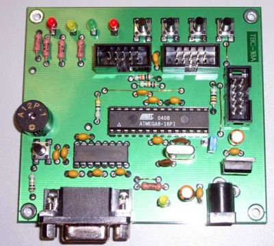
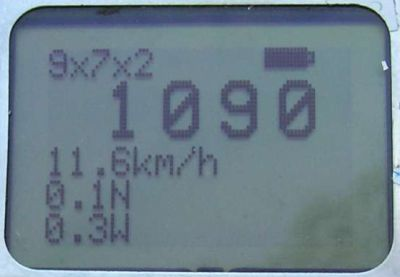
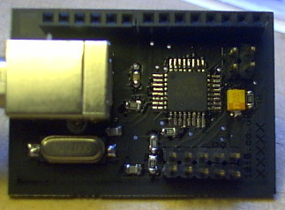
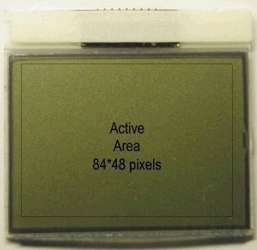

A weblog focused on interesting circuits, ideas, schematics and other information about microelectronics and microcontrollers.
E-books
Disclaimer
Because I have not tested all electronic circuits mentioned on this pages, I cannot attest to their accuracy; therefore, I do not provide a warranty of any kind and cannot be held responsible in any manner.
ATMega8
Programmable BASIC controller
13. March 2010 - 14:28 — adminTiny Basic Controller (TBC) is a simple device that can operate as a PLC (program logic controller) for home automation, control, etc. The control program is a text version of BASIC language.

(Photo from cqham.ru)
Tachometer with a LCD from Nokia 5110
28. November 2009 - 2:26 — adminTen years ago was Nokia 5110 The Big Cellphone. Here is an useful recycling: Digital tachometer with a 5110 LCD.

(Source: Elfly.pl)
AVR Ethernet I/O board
14. October 2009 - 16:39 — adminThis is really great board: AVR Ethernet I/O board with 2x RS232, 2x USB connector, BW composite video, Real Time Clock with battery backup, PS/2 keyboard connector, Wiz810MJ ethernet module and LCD 16x2 display.

Photo: Ben Zijlstra
Component checker / tester
9. October 2009 - 18:57 — adminEveryone knows the problem: You have a transistor, but you can't read its signature. Or you can't find the datasheet... You have a diode, but... You have a capacitor, but you can't read... Here is a smarty solution.

AVR signal generator... Twice, please!
27. July 2009 - 11:06 — adminTwo homemade signal generators, based on AVR microcontrollers.

AVR HID
22. July 2009 - 21:10 — adminA very simple circuit, providing sensor connection via an USB.


TellyMate - A Serial-to-TV adapter
3. June 2009 - 17:47 — adminTellyMate is a VT-52 compatible terminal display device that takes data from a RS-232 and outputs text to a TV screen, developed by guys from Batsocks.
Etch-a-sketch on AVR and Nokia 3310 LCD
22. March 2009 - 12:53 — adminIR-controlled Etch-a-Sketch based on Atmel ATMega8 and Nokia 3310 LCD.

Open Source USB to I2C Interface
28. February 2009 - 12:20 — adminBased on great Till Harbaum work (already mentioned here), Barry Carter makes this terrific USB to I2C interface.